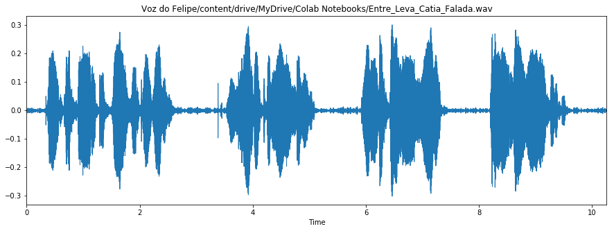
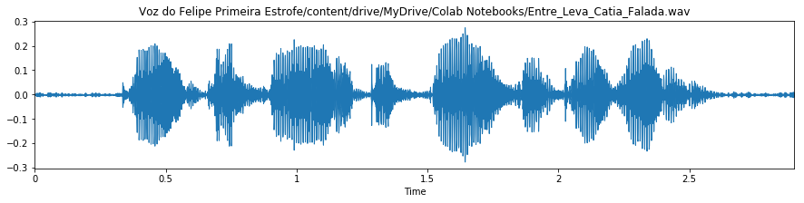

Laboratório 7
Codificação de Voz e Áudio
Foi gravado um áudio nos moldes do áudio original
Your browser does not support the audio element.
Sinal no tempo:

Após, foi separada a primeira estrofe:
Your browser does not support the audio element.
Sinal no tempo:

Voltar